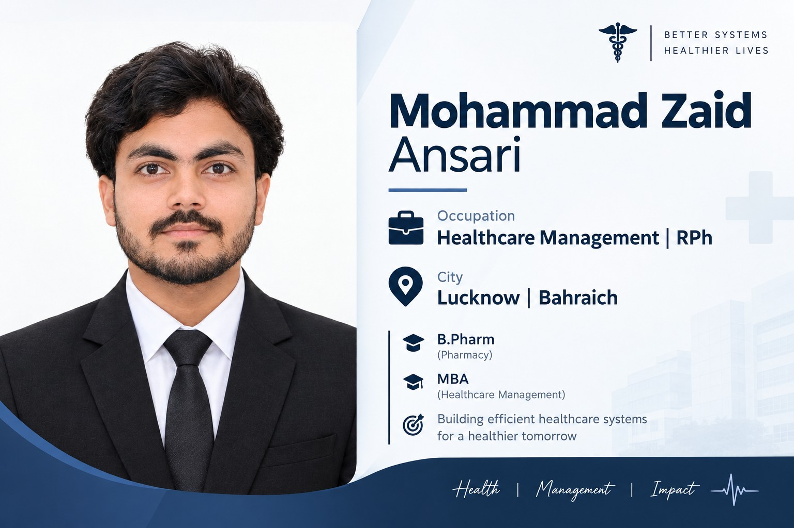

Mohammad Zaid Ansari
Healthcare and pharmacy professional with a B.Pharm background and MBA specialization in Healthcare Management, building expertise in hospital administration, healthcare operations, quality, digital health, pharmacovigilance and healthcare analytics.

About Me
I am a Registered Pharmacist and B.Pharm graduate currently pursuing an MBA in Healthcare Management. My academic and practical background combines pharmacy, healthcare management, hospital operations, pharmaceutical industry exposure and data analytics.
I am particularly interested in healthcare organizations where clinical understanding can be combined with management, operational efficiency, quality improvement and technology-driven healthcare systems.
Education
Master of Business Administration
Healthcare Management
July 2025 – June 2027 · In Progress
Integral University, Lucknow
Bachelor of Pharmacy
B.Pharm
August 2021 – August 2025
Jahangirabad Institute of Technology · AKTU
CGPA: 7.72 / 10
Experience & Training
Data Analyst Intern
Intrainz · Remote
December 2025 – January 2026
- Worked with structured datasets and data validation.
- Created and maintained Power BI dashboards.
- Supported data cleaning and reporting workflows.
- Focused on producing accurate, analytics-ready information.
Marketing Executive
Taskar Group of Companies
June 2025 – July 2025
- Supported marketing and client outreach activities.
- Maintained structured client and lead information.
- Assisted reporting and business operations.
Hospital Pharmacist Intern
Community Health Center (CHC), Badagaon, Barabanki
July 2024 – August 2024
- Gained exposure to prescription review and dispensing.
- Supported community pharmacy operations.
- Interacted with patients and healthcare professionals.
Industrial Trainee
Athens Life Sciences, Kala Amb, Himachal Pradesh
March 2024
- Observed pharmaceutical manufacturing processes.
- Gained exposure to industry documentation and compliance.
Hospital Pharmacist Intern
Maharaja Suhel Dev Medical College, Bahraich
July 2023 – August 2023
- Exposure to prescription review and medication dispensing.
- Observed hospital pharmacy and clinical workflows.
- Worked under professional supervision.
Business Correspondent
SBI Customer Service Centre (CSP), Bahraich
March 2021 – September 2021
- Handled customer transactions and documentation.
- Maintained customer and transaction records.
- Developed communication and operational skills.
Research & Academic Work
General Awareness Study About the Knowledge, Causes, and Seriousness of Antimicrobial Resistance
Co-author · Journal of Scientific and Innovative Research
2024 · Volume 13(1) · Pages 9–15
DOI: 10.31254/jsir.2024.13102Digital Health & Pharmacovigilance
Academic interest in the use of digital health technologies for pharmacovigilance, medication safety, healthcare data and patient-focused healthcare systems.
Projects & Areas of Work
Digital Health & Pharmacovigilance
Exploring how digital health tools can support pharmacovigilance, medication safety and healthcare decision-making.
Patient Referral Data Governance
Academic work focused on improving completeness, accuracy and usefulness of patient referral information in digital healthcare.
Power BI & Data Analytics
Practical work involving dashboards, structured datasets, data validation, cleaning and reporting.
Generative AI & Prompt Design
Self-directed exploration of generative AI for structured text, image and video workflows using prompt-based methods.
Skills
Conferences & Presentations
International Conference
Delegate & Poster Presentation
“Drug Repurposing”
DST-SERB & CST-UP International Conference on Novel Paradigms in Pharmaceutical Sciences, Integral University · March 2024
National Conference
Delegate
National Conference on Recent Trends in Phytopharmaceuticals
Harsha Institute of Pharmacy · December 2023
International Conference
Delegate
Kindsouls Welfare Foundation
April 2026
Registered Pharmacist
Uttar Pradesh Pharmacy Council
Registered Pharmacist — Government of Uttar Pradesh
Languages
Professional Interests
Let's Connect
For opportunities, professional networking, healthcare projects or collaboration, feel free to get in touch.
Location: Uttar Pradesh, India